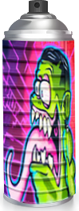

5Pointz Aerosol Art Center, Inc. is an outdoor art exhibit space in Long Island City, New York, considered to be the world’s premiere “graffiti Mecca,” where aerosol artists from around the globe paint colorful pieces on the walls of a 200,000-square-foot factory building. Over the past decade, the striking, graffiti-covered warehouse has attracted several hip-hop and R&B stars, including Doug E. Fresh, Kurtis Blow, Grandmaster Kaz, Mobb Deep, Rahzel, DJ JS-1, Boot Camp Clik, Joan Jett, and Joss Stone. On any given day, 5Pointz visitors can expect to find prominent artists, musicians, deejays, Emcees (rappers), and B-boys (break dancers) on site, in addition to filmmakers, photographers, and entire tour buses full of admirers soaking in the more than 350 Technicolor murals. The gallery curator is graffiti veteran Jonathan Cohen, best known by his signature tag, “Meres One.” His goal is to convert the five-story, block-long industrial complex at Jackson Avenue and Davis Street, formerly the Phun Phactory, into a graffiti art museum.
